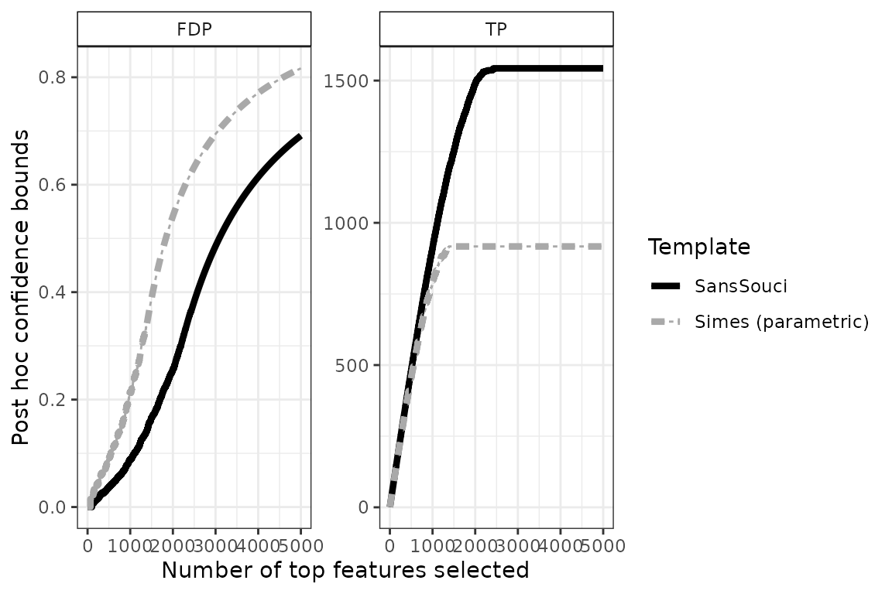
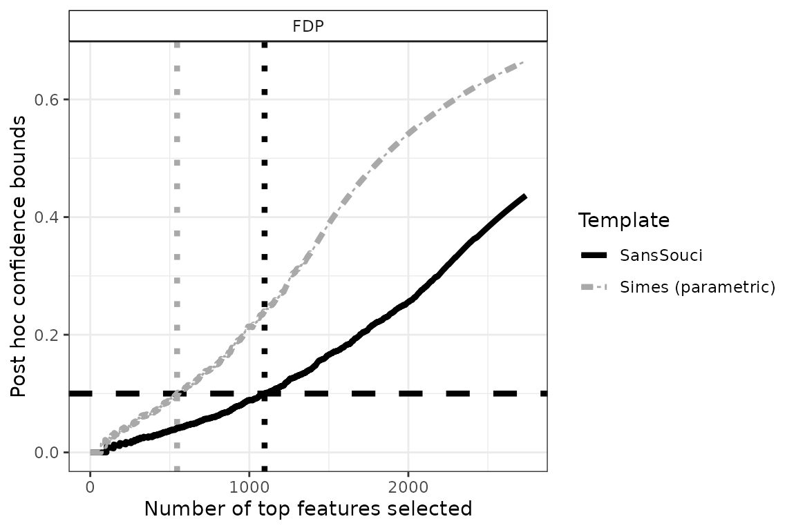
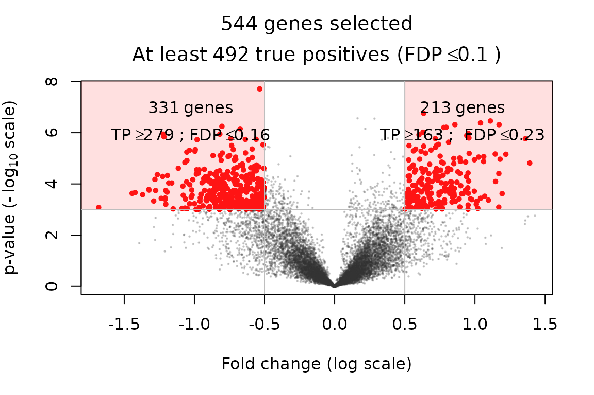
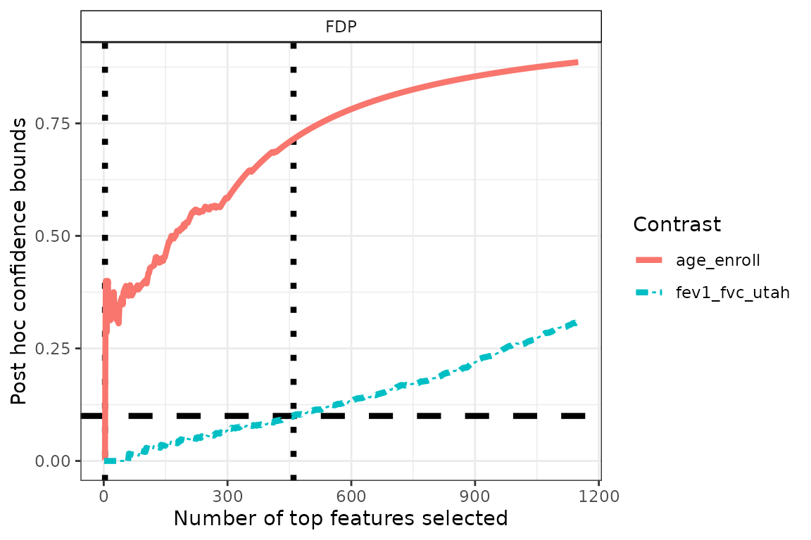
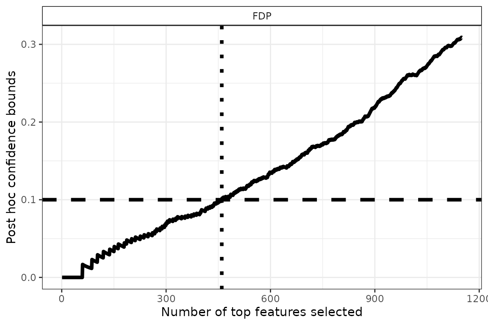
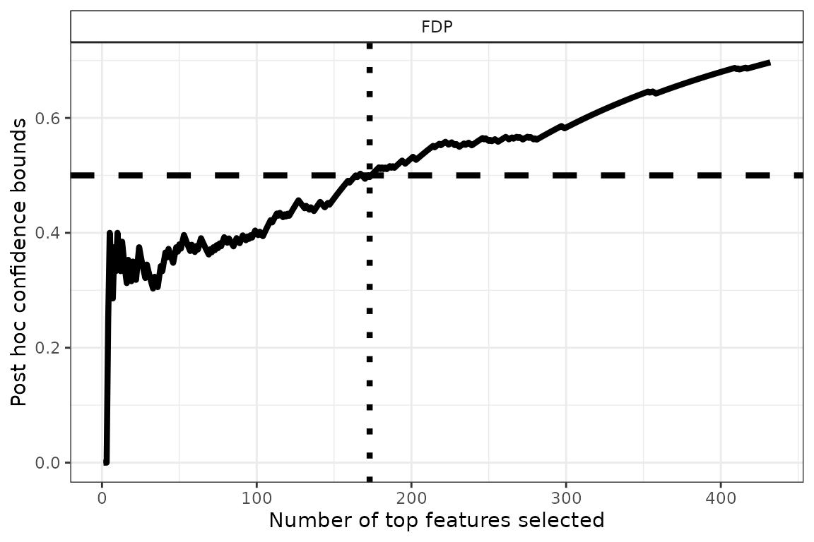
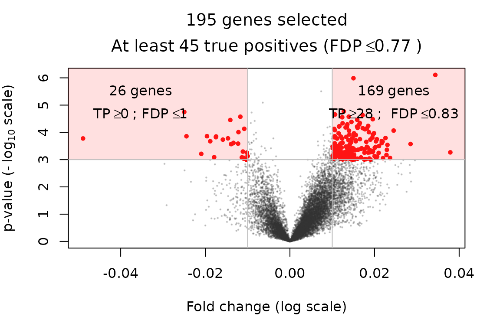

Bootstrap-based post hoc inference for differential gene expression studies in linear models
Nicolas Enjalbert Courrech, Pierre Neuvial
2025-07-02
Source:vignettes/post-hoc_differential-expression_linear-model.Rmd
post-hoc_differential-expression_linear-model.RmdThis vignette illustrates the relevance of bootstrap-based post hoc bounds on false positives for the differential analysis of gene expression measurements (microarray data). We illustrate how the post hoc methods introduced by Blanchard, Neuvial, and Roquain (2020) and extended to linear model by Davenport, Thirion, and Neuvial (2025) may be used to
- build confidence curves (envelopes) for the true or false positives and defined differentially expressed genes accordingly
- perform statistical inference on the output of volcano plots
The methods described in this vignette have been extended by Davenport, Thirion, and Neuvial (2025) for complex experimental design witch need linear models. In this vignette we reproduce some of the results obtained in Section 5.2 of Davenport, Thirion, and Neuvial (2025).
require("ggplot2") || install.packages("ggplot2")
require("sanssouci") || remotes::install_github("sanssouci-org/sanssouci@bootstrap-calibration")Set the seed of the random number generator for numerical reproducibility of the results:
set.seed(20250705)Motivation: a differential gene expression study
We focus on differential gene expression studies in Chronic Obstructive Pulmonary Disease (COPD), see Bahr et al. (2013), whose main goal was to identify genes whose expression level is significantly associated with lung function.
data("expr_COPD", package = "sanssouci.data")
Y <- expr_COPD
data("expr_COPD_design", package = "sanssouci.data")
X <- expr_COPD_design
if(sum(is.na(X))!=0){
keep.nonNA <- which(!rowAnyMissings(as.matrix(X)))
Y <- Y[, keep.nonNA]
X <- X[keep.nonNA, ]
}The data consists of
gene expression measurements for
patients. For each gene, we fit a linear model including the pulmonary
obstruction ratio (fev1_fvc_utah), along with the following
covariates (see also ?sanssouci.data::expr_COPD_design): -
age_enroll: age of the participant at the time of
enrollment in the study - gender - bmi: body
mass index - parentalcopd: parental history of COPD -
smokcignow: smoking status - ats_packyears:
Smoking history expressed in pack-years, calculated according to ATS
guidelines.
We also include an intercept in the design matrix .
X$intercept <- 1
X_copy <- X
n <- ncol(Y)
X <- X_copy
X <- as.matrix(X[, c("age_enroll", "ats_packyears", "bmi", "fev1_fvc_utah",
"gender", "parentalcopd", "smokcignow", "intercept")])The study aims at identifying associations between gene expression
and explanatory variables included in the design matrix. In the context
of a linear model, multiple hypotheses can be tested. For example, one
may test the difference between the two levels of the
gender variable, or assess the association between gene
expression and fev1_fvc_utah. This requires specifying a
contrast matrix
(of dimension
,
where
is the number of contrasts and
the number of genes) that encodes all hypotheses tested
simultaneously.
Study of a single contrast
In this section, we only study the association between gene
expression and fev1_fvc_utah taking into account other
covariate in the model. We build the following contrast matrix:
tested_variable <- "fev1_fvc_utah"
C <- matrix(1*(colnames(X) == tested_variable), nrow = 1)
rownames(C) <- "association_lung_func"
colnames(C) <- colnames(X)
C
#> age_enroll ats_packyears bmi fev1_fvc_utah gender
#> association_lung_func 0 0 0 1 0
#> parentalcopd smokcignow intercept
#> association_lung_func 0 0 0For each gene
,
we fit a model to estimate a vector of parameters
.
Then we test for each gene
and for the contrast
,
if
.
In our case, we test if the parameter of the studied variable
fev1_fvc_utah is equal to 0. We want to obtain post hoc
guarantees on a set of genes which are associated with lung function
(contrast fev1_fvc_utah). We first build a
SansSouci class object given the gene expression matrix
,
the design matrix
and the contrast matrix
.
Then we fit the model and calibrate the post hoc bound using the method
fit(), setting the target risk to
.
In the code below, we use only
bootstraps to save computing time. In practice, we recommend taking
bootstraps for more stable results.
alpha = 0.1
obj <- SansSouci(Y = Y, X = X, Contrast = C)
res <- fit(obj, alpha = alpha, B = 100) # B=100 to save computing time, but should use B=1000.For comparison purposes we also run the (parametric) Simes method introduced by Goeman and Solari (2011):
res_Simes <- fit(obj, B = 0, family = "Simes", alpha = alpha) ## B=0 => no calibration!
resList <- list("SansSouci" = res,
"Simes (parametric)" = res_Simes)Confidence curve
In the absence of prior information on genes, a natural idea is to rank them by decreasing statistical significance, and a natural question to ask is:
Can we provide a lower confidence curve on the number (or proportion) of truly differentially expressed genes among the most significant genes?
The confidence curve obtained by calibration is the solid black line in the figure below:
conf_bounds <- lapply(resList, predict, all = TRUE)
cols <- c("black", "darkgray")
p <- plotConfCurve(conf_bounds, xmax = 5000, cols = cols, legend.title = "Template") +
geom_line(linewidth = 1.5)
p
This plot can be interpreted as follows: among the 2000 most significant genes, the number of truly differentially expressed genes is at least 1489 (right panel). Equivalently, the FDP among these 2000 genes is at most 0.26 (left panel).
The dashed gray curve is obtained by the parametric Simes method introduced by Goeman and Solari (2011). The comparison between the two curves illustrates the gain in power obtained by using permutation methods to adapt to the dependence between genes. In this example, the parametric Simes method gives the following guarantees: among the 2000 most significant genes, the number of truly differentially expressed genes is at least 917 (right panel). Equivalently, the FDP among these 2000 genes is at most 0.54 (left panel).
Differentially expressed genes
In this section we show how to the above curves may be used to address the question:
Which genes have their expression associated with lung function with high probability?
To do so, we define differentially expressed genes as the largest set of genes for which the FDP bound is less than a user-given value, for example . This corresponds to drawing a horizontal line in the preceding plot:
q <- 0.1 # FDP budget (user-defined)
FDP <- lapply(resList, predict, what = "FDP", all = TRUE)
n_DEG <- sapply(FDP, function(x) sum(x <= q))
size <- 1.5
p <- plotConfCurve(FDP, xmax = 2.5*n_DEG, col = cols, legend.title = "Template") +
geom_hline(yintercept = q, linetype = "dashed", linewidth = size) +
geom_vline(xintercept = n_DEG, linetype = "dotted", col = cols, linewidth = size) +
geom_line(linewidth = size)
p
Using , we obtain 1096 differentially expressed genes. Note that this gene list has a clear statistical interpretation: with probability , the proportion of false positives (that is, genes that are called DE by mistake) is less than .
The above example also illustrates the increase in power obtained by calibration, since the parametric Simes method yields a subset of “only” 546 genes called differentially expressed (with identical statistical guarantees).
Volcano plots
A classical practice in gene expression studies is to define DE genes as those passing both a significance filter (small -value) and an effect size or “fold change” filter. Here, the fold change of a gene is defined as the estimate of the tested contrast . This double selection by -value and fold change corresponds to two sets of genes, with positive/negative fold change, which can be represented in the following plot:
volcanoPlot(res, p = 1e-3, r = 0.5)
This type of plot is called a “volcano plot” Cui and Churchill (2003). Post hoc inference makes it possible to obtain statistical guarantees on selections such as the ones represented in the above figure.
Test several contrasts simultaneously
If several contrasts are studied, to obtain post hoc guarantees, we
have to consider all tests (for all genes and all tested contrasts)
simultaneously at the inference step. The contrast matrix
contains all contrasts, one by row. For example, let us assume that we
we want to test the lung function variable fev1_fvc_utah
and the age_enroll variable. Then the contrast matrix is
then:
tested_variables <- c("age_enroll", "fev1_fvc_utah")
C <- diag(ncol(X))[which(colnames(X) %in% tested_variables),]
colnames(C) <- colnames(X)
rownames(C) <- colnames(X)[which(colnames(X) %in% tested_variables)]
C
#> age_enroll ats_packyears bmi fev1_fvc_utah gender parentalcopd
#> age_enroll 1 0 0 0 0 0
#> fev1_fvc_utah 0 0 0 1 0 0
#> smokcignow intercept
#> age_enroll 0 0
#> fev1_fvc_utah 0 0We build another SansSouci object with this contrast
matrix, fit the model and calibrate the post hoc bounds.
Using information from all contrasts simultaneously is important to ensure valid post hoc inference. However, the identification and selection of differentially expressed (DE) genes are typically performed contrast by contrast, in response to specific scientific questions. To support this, the package provides visualization tools such as confidence curves and volcano plots, which help interpret the results for a given contrast.
Confidence curves
By default, the confidence curves associated to each contrast are
displayed on the same plot, allowing for direct comparison of the signal
across multiple contrasts. In the example below, we can clearly observe
that the signal associated with the fev1_fvc_utah variable
is stronger than that of age_enroll.
q <- 0.1 # FDP budget (user-defined)
FDP <- predict(res, all = TRUE, contrast_name = c("age_enroll", "fev1_fvc_utah"), what = "FDP")
n_DEG <- sapply(FDP, function(x) sum(x <= q))
size <- 1.5
p <- plot(res, xmax = 2.5*n_DEG, contrast_name = c("age_enroll", "fev1_fvc_utah"), what = c("FDP")) +
geom_hline(yintercept = q, linetype = "dashed", linewidth = size) +
geom_vline(xintercept = n_DEG, linetype = "dotted", linewidth = size) +
geom_line(linewidth = size)
p
It is also possible to specify the contrast of interest. To do so for
the lung function (corresponding to the contrast
fev1_fvc_utah), we define differentially expressed
genes as the largest set of genes for which the FDP bound is less than a
user-given value, for example
.
This corresponds to drawing a horizontal line in the confidence curves
on the FDP:
q <- 0.1 # FDP budget (user-defined)
FDP <- predict(res, all = TRUE, contrast_name = "fev1_fvc_utah", what = "FDP")
n_DEG <- sum(FDP$bound <= q)
size <- 1.5
p <- plot(res, xmax = 2.5*n_DEG, contrast_name = "fev1_fvc_utah", what = c("FDP")) +
geom_hline(yintercept = q, linetype = "dashed", linewidth = size) +
geom_vline(xintercept = n_DEG, linetype = "dotted", linewidth = size) +
geom_line(linewidth = size)
p
Using
,
we obtain rn_DEG` differentially expressed genes. Note that
this gene list has a clear statistical interpretation: with probability
,
the proportion of false positives (that is, genes that are called DE by
mistake) is less than
.
The same analysis can be made for the contrast on
age_enroll.
q <- 0.5 # FDP budget (user-defined)
FDP <- predict(res, all = TRUE, contrast_name = "age_enroll", what = "FDP")
n_DEG <- sum(FDP$bound <= q)
size <- 1.5
p <- plot(res, xmax = 2.5*n_DEG, contrast_name = "age_enroll", what = c("FDP")) +
geom_hline(yintercept = q, linetype = "dashed", linewidth = size) +
geom_vline(xintercept = n_DEG, linetype = "dotted", linewidth = size) +
geom_line(linewidth = size)
p
Due to the weaker signal in this case, we had to increase the target FDP level in order to obtain a relatively large set of genes selected.
Selection on Volcano Plot
The volcano plot can be used to make selection of interest genes. Here, the name of the contrast has to be specified explicilty.
volcanoPlot(x = res, contrast_name = "fev1_fvc_utah", p = 1e-3, r = 0.5)Compared to the volcano plot obtained in the preceding section, the selected genes are the same because the -values are identical. However, the confidence bounds are less tight. This is explained by the fact that here two contrasts are tested instead of one: the total number of hypotheses tested is twice as large as previously, resulting in a more severe multiple testing correction.
volcanoPlot(x = res, contrast_name = "age_enroll", p = 0.001, r = 0.01)
As noted above, the association of variable age_enrol
with gene expression is much weaker.